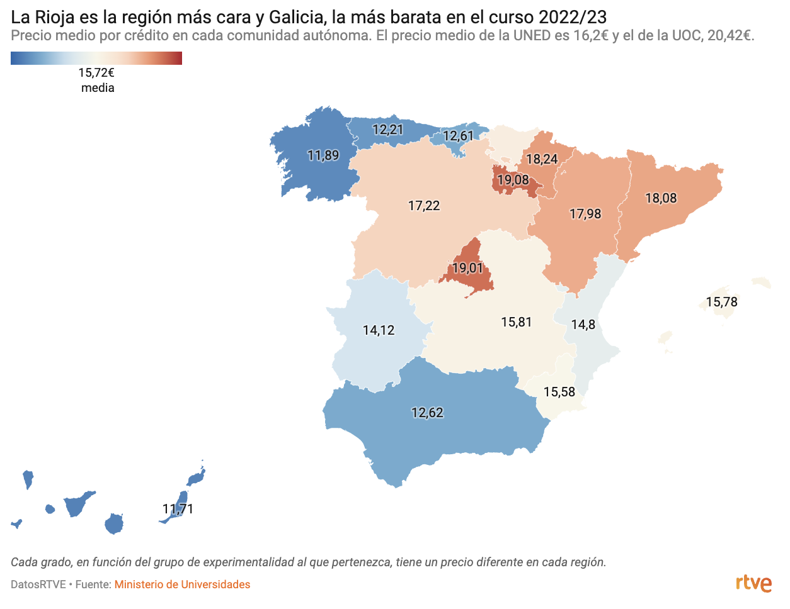

Ejercicio matrículas universitarias
Suspender en España sale muy caro. Los precios de las matrículas por asignatura varían mucho en función del territorio, la rama de estudio y el número de veces que se repite. Madrid y La Rioja son las comunidades con el precio por crédito más caro.
Esta realidad puede explicarse (y cuantificarse) con datos. El siguiente ejercicio plantea utilizar los datos de precios públicos de Grado por experimentalidad y CC.AA. de la Estadística de precios públicos universitarios del Ministerio de Universidades para elaborar un mapa y un gráfico.
1. Descarga los datos
Para realizar este ejercicio, necesitas descargar los datos en formato CSV y subirlos a un programa de hojas de cálculo como Excel o Google Sheets.
Cuando hayas terminado, deberías tener una hoja parecida a esta:
2. Limpia los datos
¿Qué hay que hacrle a los datos para poder trabajar con ellos?
üîé Pista
- Es mejor trabajar con los datos en vertical.
- Revisa que los datos tengan formato numérico.
3. Analiza los datos y pinta un gráfico de rangos
Después de comprender los datos, ve a Datawrapper y pinta un gráfico de rangos en el que aparezca una línea por cada comunidad autónoma y otra para el total de España. Deben aparecer cuatro puntos en cada una, de forma que se visualice cómo incrementa el precio del crédito por primera, segunda, tercera y cuarta matrícula.

4. ¿Cuáles son las comunidades autónomas más caras y baratas del curso 2022/2023?
De nuevo en Datawrapper, utiliza los datos de primera matrícula para mostrar el precio medio por crédito. Luego, ajusta la leyenda del gráfico en las opciones de visualización para usar una escala divergente con la media de España como centro. ¿Cuáles están por encima y por debajo?

Ejercicio elaborado por Jaime Gutiérrez a partir del reportaje “Suspender asignaturas multiplica hasta seis veces el precio de estudiar” de Lucía Montilla (DatosRTVE, 04.03.2023)